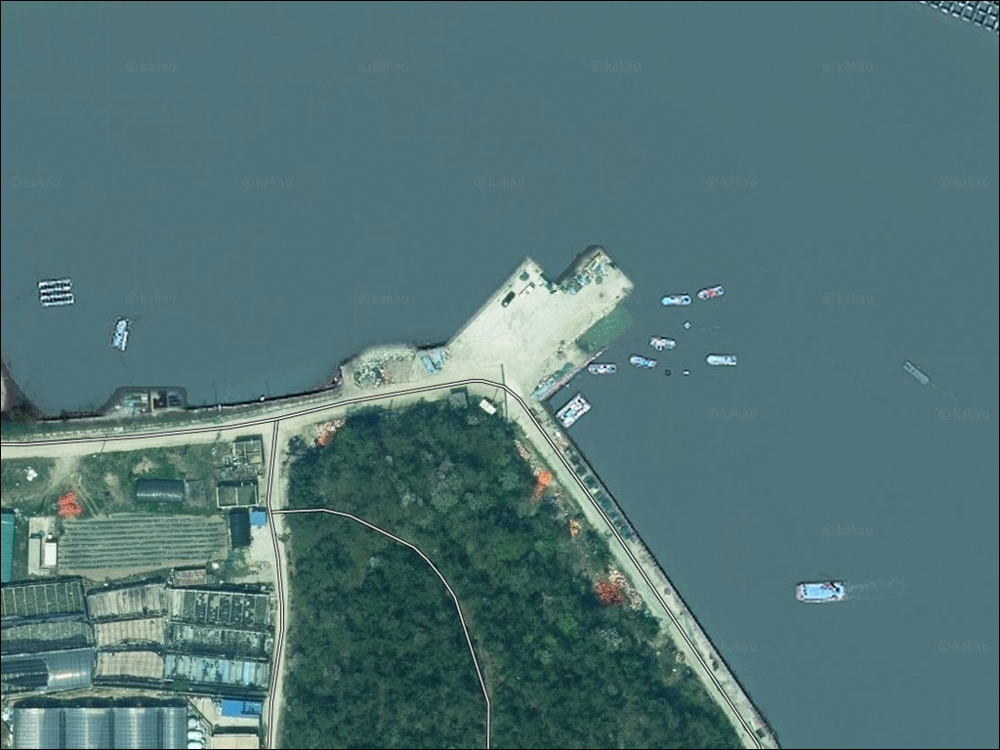
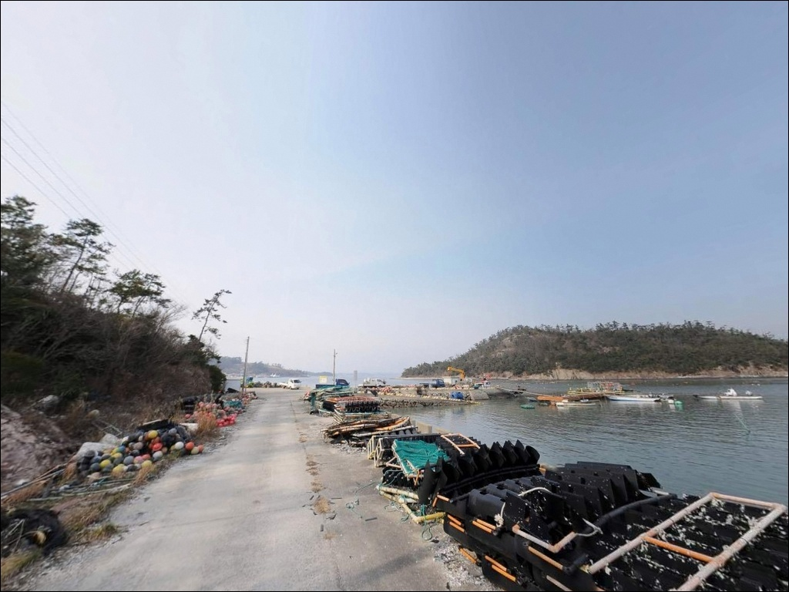
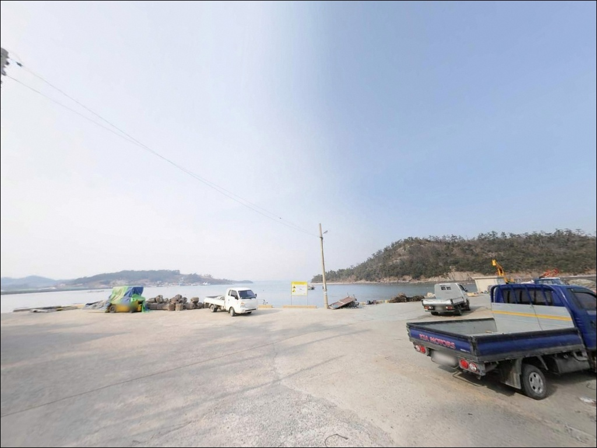
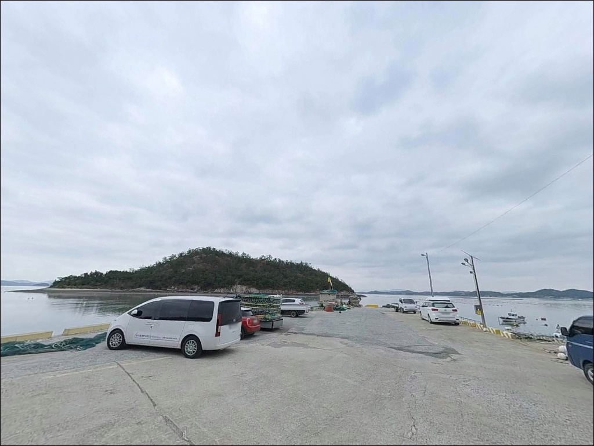
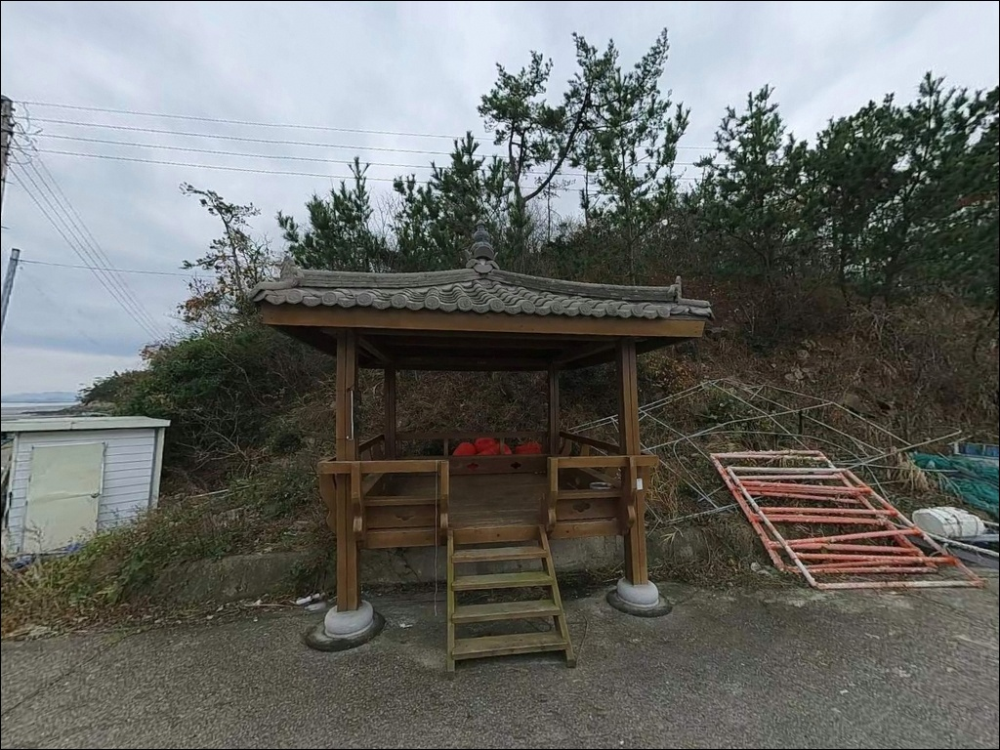
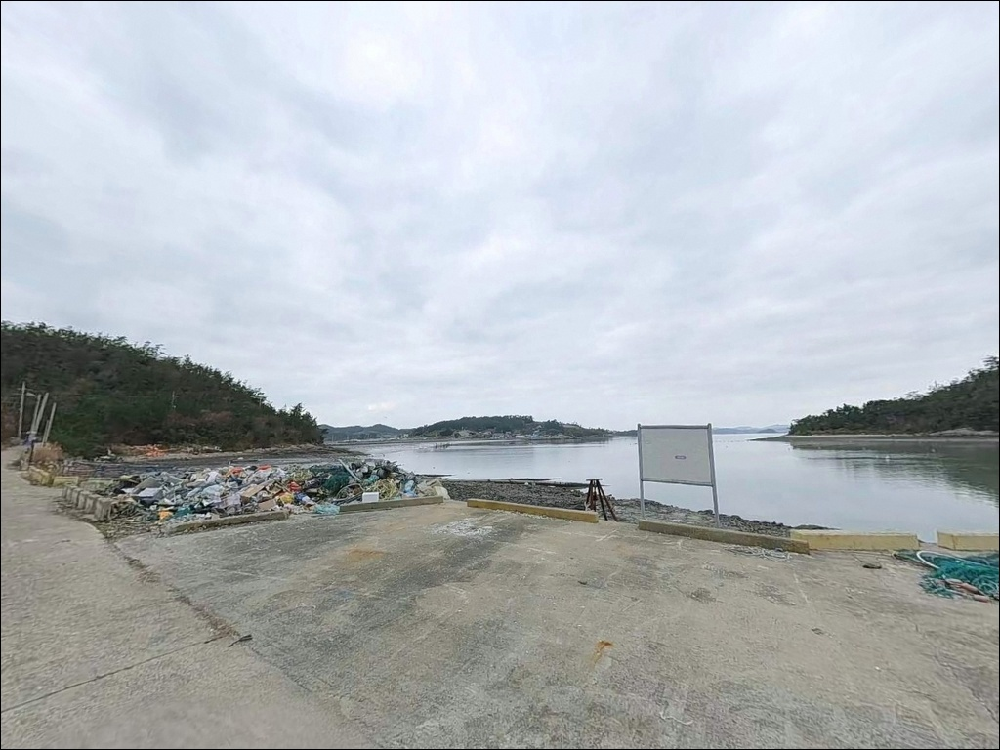
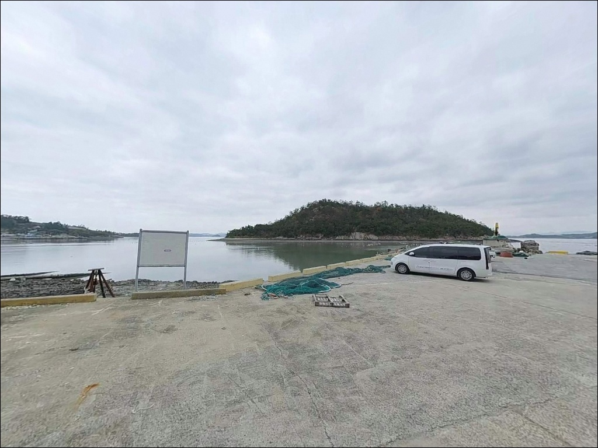
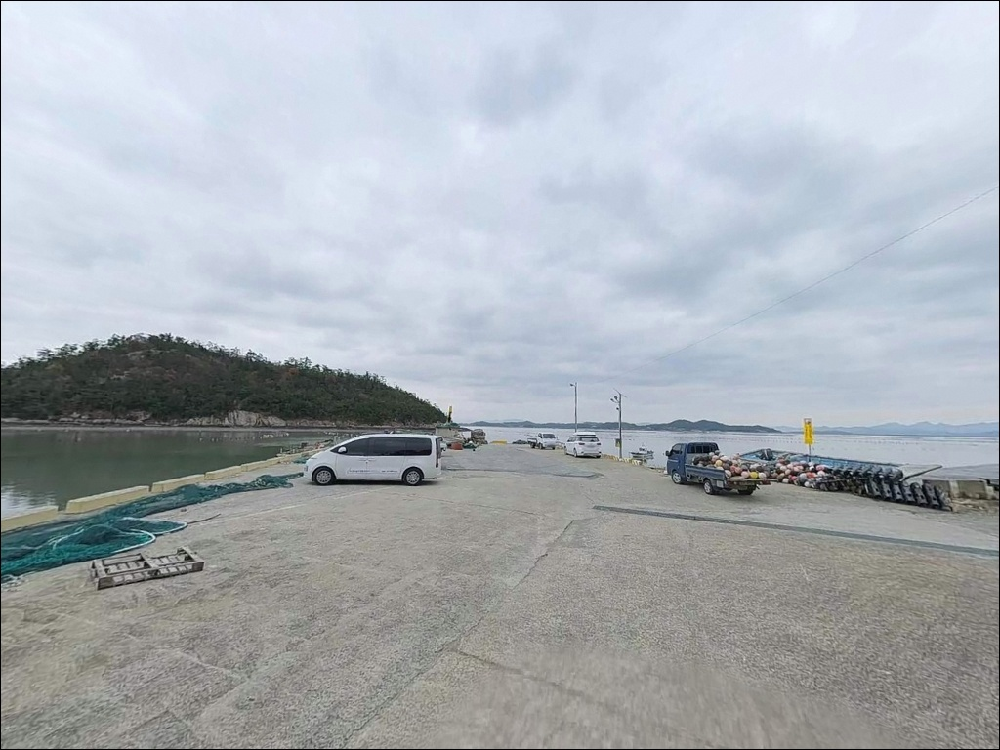
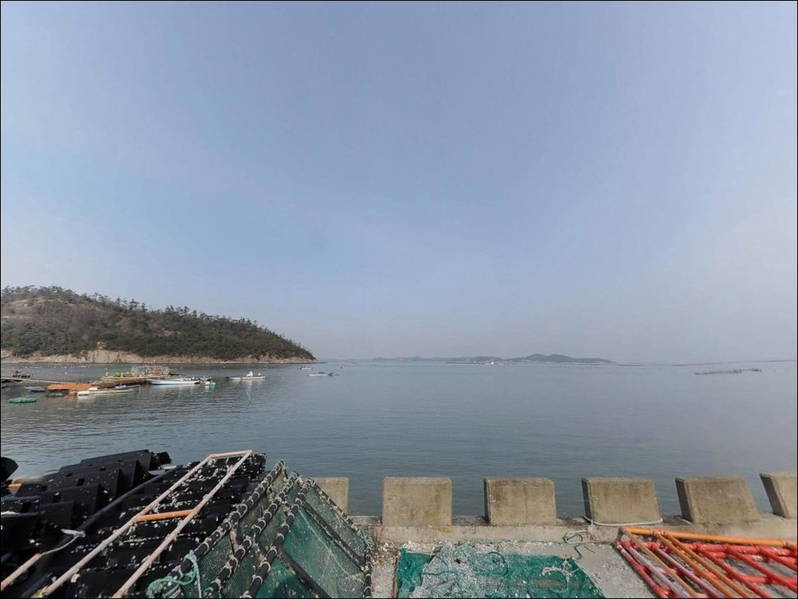

벽파리 선착장, 진도 전남 진도군 잔잔한 물결과 어울리는 차박, 낚시 한적한 포인트
이 페이지에는 광고(제휴 링크 포함)가 있으며, 광고 링크를 통해 구매하면 운영자가 판매 수익 또는 수수료를 받을 수 있습니다. 포인트 사진: 카카오맵 스카이뷰·로드뷰. 이 페이지의 지도·사진 이미지는 카카오맵의 실제 서비스 이미지와 다를 수 있습니다.


포인트 안내
벽파리 선착장
전남 진도군 고군면 벽파리 280-5
조류가 강한 물때를 모르고 벽파항을 찾으면
어떤 채비를 내려도 운용이 불가능한 상황이 생깁니다.
명량수도 영향권에 있는 해역 특성상
사리 전후에는 조류가 너무 세져
찌도 원투 채비도 제대로 흐르지 않습니다.
이 글은 벽파리 선착장의 지형 구조,
물때 판단 기준, 낚시 방식 적합성,
진입 여건을 중심으로 정리합니다.
조황 단정이나 특정 어종 보장은
이 글의 범위에 포함되지 않습니다.

1. 진입 동선과 차량 접근성
벽파리 선착장은 진도대교를 건넌 뒤
18번 국도를 따라 진도읍 방향으로 진입한 다음
고군면 벽파리 쪽으로 이어지는
포장 해안도로를 통해 접근합니다.
명량대첩로(해안도로)가 벽파항에서 시작하는 구간으로,
도로 자체는 포장이 완료된 상태라
승용차부터 소형 캠핑 차량까지
별도의 오프로드 주행 없이 진입이 가능합니다.
어촌 마을과 인접한 포구 구조여서
항구 안쪽으로 깊이 들어갈수록
도로 폭이 좁아지는 구간이 있습니다.
대형 SUV나 캠핑카는 출발 전
위성지도로 항구 안쪽 회차 공간을
확인해 두는 편이
안전한 진입 방식입니다.
주차는 선착장 주변 공터를 중심으로
이용하는 방식이 일반적입니다.
어선 접안·작업 동선과 겹치지 않는 자리를
먼저 확인하는 것이 기본이며,
벽파항 선착장 인근에는
진도군 고군면사무소가 관리하는
공중화장실이 상시 개방되어 있습니다.

2. 차박 환경과 야간 체류 여건
벽파리는 벽파마을과 선착장이
바로 맞닿은 구조의 소규모 어촌 마을입니다.
민가와 가까운 포구 구조여서
야간 프라이버시는 낮은 편입니다.
가로등은 선착장 인근 일부 구간에 설치되어 있으나
방파제 끝단이나 갯바위 방향으로 이동할수록
조명이 줄어드는 환경이라
개인 랜턴과 헤드랜턴 준비는 필수입니다.
선착장 주변 공터에서 차박을 시도하는 경우
민가와 가까운 위치인 만큼
야간 소음과 차량 조명을 최소화하는 것이
기본 매너입니다.
벽파항은 조용한 독립형 차박지보다는
낚시 후 짧게 대기하는 방식에
더 잘 어울리는 환경입니다.


3. 주변 편의시설 및 인프라 현황
벽파항 선착장 인근에는
진도군 고군면사무소가 관리하는
공중화장실이 위치합니다.
남녀 화장실이 분리된 구조이며
상시 개방이 확인된 시설입니다.
식료품이나 낚시 소모품은
벽파항 일대에서 직접 구하기 어렵습니다.
고군면 소재지 방향으로 이동하면
식당을 이용할 수 있고,
낚시 소품과 식자재는
진도읍 또는 진도대교 인근 상권에서
출발 전 미리 갖추는 방식이
현실적입니다.
벽파항 바로 위 언덕에는
이충무공 벽파진전첩비와 벽파정 터가 있습니다.
명량해전 승첩을 기념하는 향토 유적으로
항구에서 짧은 도보 거리에 자리하며,
낮 시간대에 잠깐 둘러볼 수 있는
인근 탐방 코스입니다.

4. 방문 전 반드시 챙겨야 할 준비사항
벽파항 방문에서 가장 먼저 확인할 것은
물때입니다.
바다타임에서 벽파항 기준 물때를 확인하고
조금 전후 2물~5물 타이밍에 맞춰
출발 시각을 계획하는 것이 기본 전략입니다.
진도 해역은 기상 변화가 빠른 편입니다.
강풍 예보나 풍랑 특보가 있는 날은
방문 자체를 조정하는 편이 안전합니다.
조류가 강한 해역 특성상 여분 채비를
넉넉하게 준비하는 것이 좋으며,
구명조끼는 방파제·선착장 진입 시 필수입니다.
벽파항은 작은 어항이라
식수와 연료를 자급 체제로 준비해야 합니다.
어선 이동 동선과 계류선 주변은
낚시 위치에서 피해야 하며,
출조 전 최신 조황은
"벽파항 조황" 또는 "진도 벽파항 낚시"로
미리 검색해 보시는 편이 좋습니다.

5. 조류가 강할수록 물때 선택이 조과를 결정하는 구조
벽파리 선착장은 진도 동북쪽 해안에 자리하며
해남반도와 마주보는 방향으로 해협이 열린 구조입니다.
명량수도(울돌목) 인근 해역 특성상
사리 전후 조류 속도가 매우 빠른 편이며,
이 시기에는 채비 컨트롤 자체가
어려워지는 수준의 조류가 흐릅니다.
수심은 6m~11m 수준으로
선착장 끝단과 항구 외측으로 갈수록
수심 변화가 생기는 구조입니다.
바닥은 모래와 혼합 저질 형태이며
수중 암초가 산재할 가능성이 있어
채비 손실에 대비하는 편이 좋습니다.
조류가 살아나는 타이밍에는
회유성 어종의 이동 통로 역할을 하는
지형 여건을 갖춘 포인트입니다.
벽파항은 명량수도 영향권에 있어
물때 판단이 낚시 성패를 결정하는 포인트입니다.
조금 전후 2물~5물 타이밍이 되면
조류가 완만해져 채비 운용이 안정되고,
그 한두 시간을 집중 공략하는 방식이
이 포인트의 기본 전략입니다.
출조 전 최신 조황은 반드시 검색해 보시기 바랍니다.


6. 벽파항 지형에 맞는 낚시 스타일 제안
원투낚시는 이 포인트 구조에 가장 잘 맞는 방식입니다.
선착장 가장자리나 항구 외측 방향으로
채비를 멀리 던져 바닥층을 노리는 방식이 유효하며,
진도 동북부 해역에서
붕장어, 도다리, 보리멸, 민어 계열 어종이
기대되는 환경입니다.
조류가 느려지는 조금 전후 타이밍에
집중적으로 채비를 운용하는 것이
이 포인트에 맞는 방법입니다.
루어낚시도 이 포인트에서 노려볼 수 있습니다.
조류가 흐르는 구간에서 농어를 대상으로
미노우·바다루어를 운용하는 방식이며,
야간에는 선착장 주변 불빛 아래
깊은 수심 구간을 중심으로
메탈지그·그럽웜 채비로 바닥층을 탐색하는
방식도 어울립니다.
찌낚시는 조류가 완만한 시간대에
항구 내측 또는 조류 변화 구간을 중심으로
진행하는 방식이 맞습니다.
감성돔과 숭어를 대상으로
흘림찌 채비를 활용하는 것이
진도 동북부 해역의 일반적인 접근법이며,
3월~5월 시즌이 찌낚시 운용에 적합한 시기입니다.

7. 대안 포인트와 플랜 B 동선
벽파항 조류가 너무 강하거나
여건이 맞지 않을 경우
진도 고군면 권역에서 가장 먼저
이동해볼 만한 포인트는
용호항 방파제입니다.
고군면 용호리 일대에 위치한 방파제로
끝단 수심이 비교적 깊고
원투낚시 포인트로 알려진 구간입니다.
같은 방향에서 조금 더 이동하면
굴포항선창 방파제(임회면 굴포리)가 있습니다.
암반 저질 환경으로 릴찌·원투·루어 등
여러 낚시 방식에 대응 가능한 포인트이며,
감성돔, 우럭, 노래미, 붕장어 계열 어종이
기대되는 구조입니다.
벽파항과 지형 성격이 달라
조류 상황에 따라 선택하기 좋은 대안입니다.
차박 여건을 더 넓은 공간에서 확보하고 싶다면
고군면 금계리 가계해변이 대안입니다.
넓은 주차 공간과 화장실·매점이 갖춰진 곳으로,
인근 회동방파제에서 방파제 낚시도
함께 계획하기 좋은 동선입니다.

물때를 알고 들어가면
벽파항이 다르게 보입니다
원투낚시나 루어낚시를 즐기는 낚시인이라면
벽파리 선착장의 조류 흐름과 수심 구조는
충분히 공략 가능한 여건입니다.
진도 동부 해안 특유의 어족자원이
풍부한 해역이라는 점도 장점이며,
조금 전후 2물~5물 타이밍을 계산하고
진입하면 채비 운용이 안정되는 환경입니다.
반면 물때 계산 없이 사리 전후에 찾아가거나
기상 확인 없이 출조하면
어떤 채비도 운용이 어려운 상황이 생깁니다.
항구 주변 공중화장실이 갖춰져 있고
진입 도로 여건도 나쁘지 않아
기본 체류 조건은 충족되지만,
물때·기상·채비 준비 세 가지를
갖추고 간다면 헛걸음 없는 출조가 됩니다.
낚시 후 차박으로 마무리하고 싶다면
선착장 주변 공터보다
가계해변 방향으로 이동해
더 넓은 공간을 확보하는 동선이
벽파항 출조와 차박을 함께 즐기는
현실적인 방법입니다.